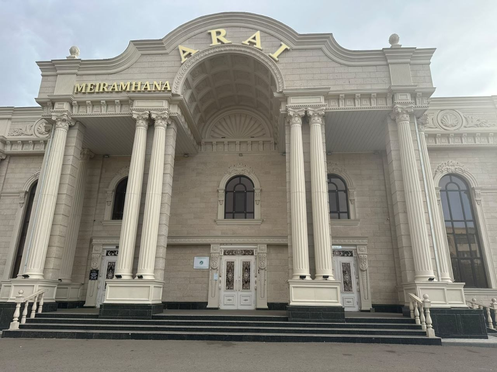
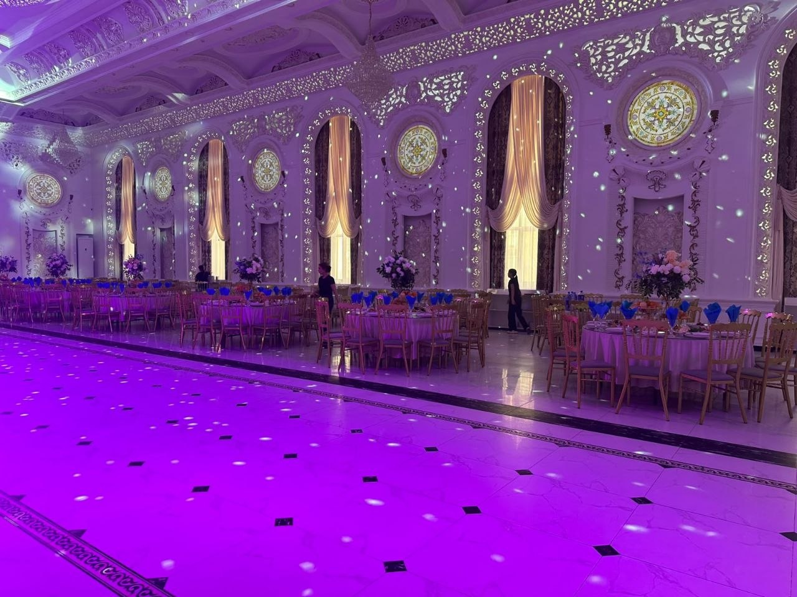
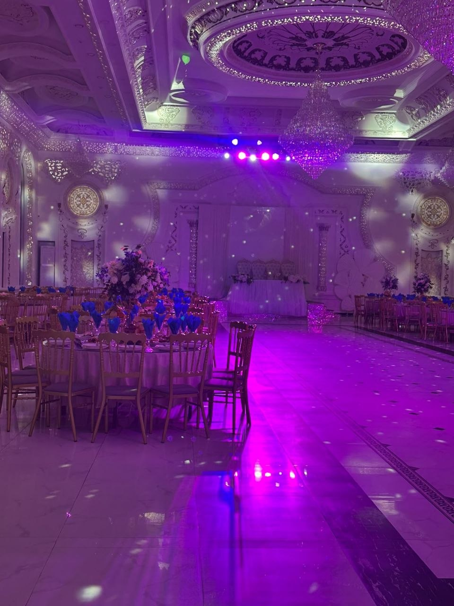

Welcome to Arai

Arai Restaurant is located at 133 Satpayev Avenue, Satpayev, Ulytau Region, Kazakhstan. It is a local restaurant with a spacious indoor hall that can be used for celebrations, family gatherings and special events. The venue has dining areas, an open central floor and decorative lighting that creates a comfortable atmosphere for guests.
The main hall is one of the central parts of the restaurant. It includes round dining tables, large windows, chandeliers and decorative details. The tables can be arranged around the open area of the hall, which leaves space for guests during larger celebrations and events.
This website provides useful information about the restaurant in one place. Visitors can see photographs of the real venue, learn about its facilities and find the address and telephone number. Information about celebrations and the booking form can be found on the Events & Booking page.
Inside Arai



Venue Features
-
Event hall
- Indoor guest seating
- Central open floor
- Space for celebrations
- Decorative chandeliers
- Large windows
- Dining tables for guests
Planning a Visit
- Choose a suitable date.
- Estimate the number of guests.
- Contact the restaurant.
- Discuss the event arrangements.
Restaurant Information
| Information | Details |
|---|---|
| Name | Arai Restaurant |
| Type | Restaurant and event venue |
| Address | 133 Satpayev Avenue, Satpayev, Ulytau Region |
| Phone | +7 777 477 4059 |